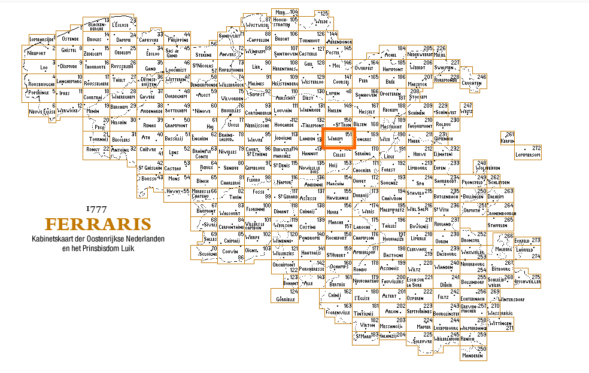

1777
https://nl.wikipedia.org/wiki/Heerlijkheid_Borculo
https://nl.wikipedia.org/wiki/Christoph_Bernhard_von_Galen
De nederlanden in kaart gebracht Generaal Ferrais
Joseph Jean François graaf de Ferraris (Lunéville, 20 april 1726 – Wenen, 1 april 1814) was vrijmetselaar, maakte als adellijk officier carrière in het keizerlijke Oostenrijkse leger, werd onder meer generaal bij de Oostenrijkse artillerie en veldmaarschalk in de Oostenrijkse Nederlanden. Hij voerde de eerste grootschalige systematische kartering uit in West-Europa. Hij liet in de 18e eeuw topografische kaarten maken van de Oostenrijkse Nederlanden, ongeveer het huidige België en het groothertogdom Luxemburg, de zogenoemde Ferrariskaart.
https://common.ngi.be/FerrarisKBR/index.jsp?l=nl

De Nederlanden in kaart gebracht
Maria Theresia wil gelijk statuut voor alle colleges
22 september 1777. Keizerin Maria Theresia heeft alle colleges en kost-scholen onder haar bescherming genomen en een streng tuchtregle ment uitgevaardigd. Enkele uittrek-sels: "De dag begint en eindigt met het gebed. De echte hoffelijkheid komt uit het hart, en de schoolmees- ters zullen zich er vooral op toeleg gen het hart van de jonge mensen te vormen, er de kiemen van alle deugden in te zaaien en te ontwikkelen, vooral de deugd van de liefde tot God, tot hun medemensen en tot de liefdadigheid. Zij zullen de ver- plichtingen van de onderdanen tegenover hun vorst onderwijzen. Zij zullen geen lichamelijke of verne- derende straffen geven. Zij mogen zich niet beperken tot het uitleggen, maar moeten er voor zorgen dat de gegeven lessen gekend zijn en blij ven; zij moeten de smaak en de liefde voor de literatuur bijbrengen en de leerlingen derwijze tot begrip van de auteurs brengen, dat zij zich een afschuw van de ondeugd en liefde voor de deugd eigen maken; en ten slotte de geest van de kinde- ren enkel belasten met wat hun tot nut strekt. Alles moet op dit doel gericht zijn, zelfs de penitenties. Zij moeten de liefde wekken voor de godsdienst en de deugden van de orde, de hoffelijkheid, de zuiverheid en alles wat bijdraagt tot het geluk van de maatschappij. De regering zal alle inlichtingen en rapporten van de bisschoppen, de fiscalen en de magistraten rechtstreeks ontvangen." Toch blijft het analfabetisme een plaag, en het valt af te wachten of hieraan kan worden verholpen.
https://nl.m.wikipedia.org/wiki/Maria_Theresia_van_Oostenrijk_(1717-1780)
Luik of Londen ?